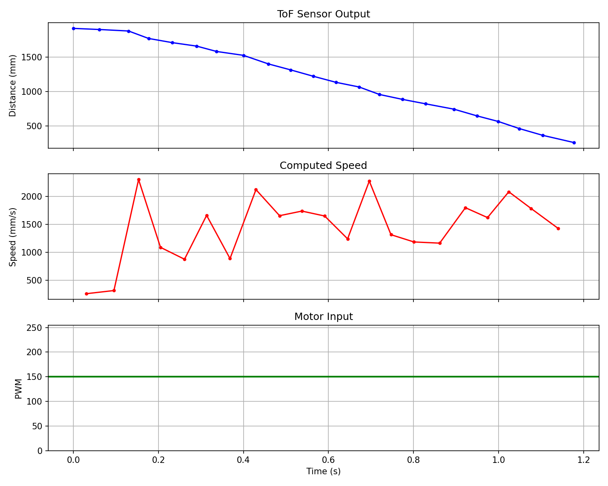
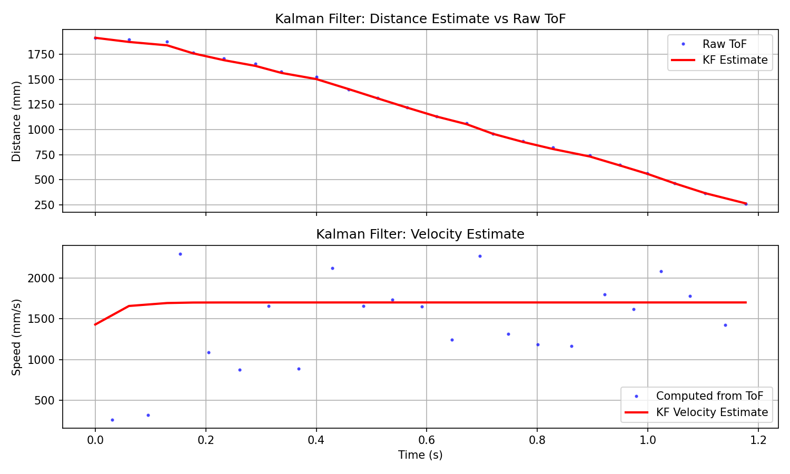
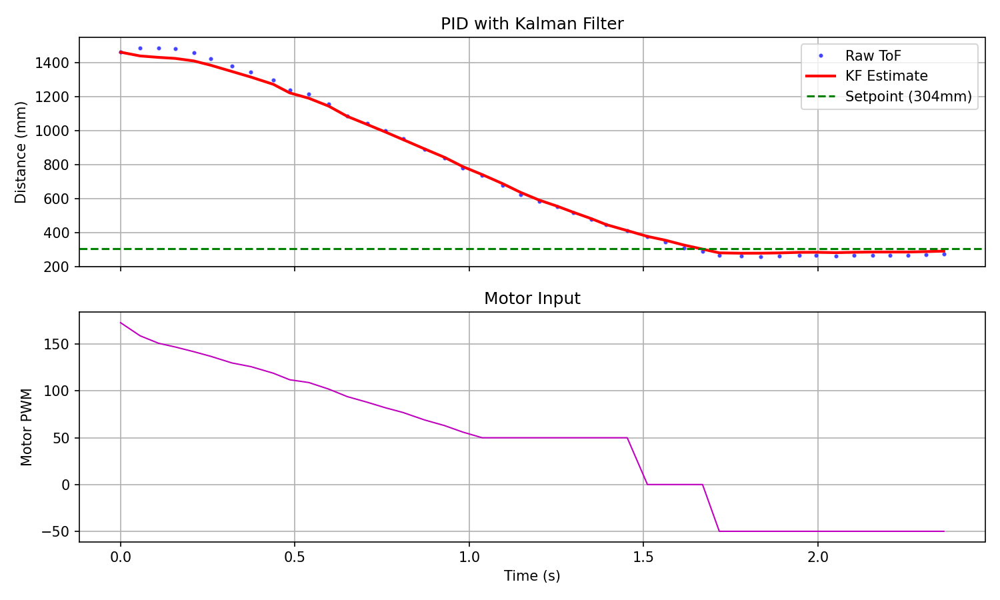

1. Estimate Drag and Momentum
Step Response Experiment
To build the state space model, I drove the car toward a wall at a constant 150 PWM (about 59% of max) while logging ToF distance. This is in the range of PWM values my Lab 5 PID controller typically commanded, so the dynamics should be representative. I added a STEP_RESPONSE BLE command that zeros the data arrays, calls driveForward(speed), and lets the normal-mode loop log ToF readings at ~20Hz. A manual STOP command brakes the car before wall impact.
The raw data had some initial readings where the car hadn't started moving yet, so I trimmed those off. The resulting plots show distance decreasing from ~1900mm to the wall, velocity ramping up to ~1700 mm/s, and a constant motor input of 150 PWM:

Step response data. Top: ToF distance. Middle: computed speed. Bottom: constant 150 PWM input.
Computing d and m
Velocity was computed from finite differences of the ToF data. The readings are noisy (characteristic of differentiating position data), but the trend is clear: the car accelerates from rest and the speed oscillates around a steady state of roughly 1700 mm/s.
Using 90% rise time, the velocity target is 1530 mm/s. From the velocity data, this is reached at about t = 0.154s. The drag and momentum terms follow from the first-order system model:
m = -d * t_rise / ln(1 - 0.90) = 0.0000392
Data was saved to CSV so it persists across kernel restarts.
| Parameter | Value |
|---|---|
| Step PWM | 150 |
| Steady state speed | 1700 mm/s |
| Rise fraction | 90% |
| Rise time | 0.154 s |
| Drag (d) | 0.000588 |
| Momentum (m) | 0.0000392 |
2. Initialize KF (Python)
A, B, C Matrices
The state vector is [position, velocity]. Position is defined as the negative of distance-to-wall (so it increases as the car moves forward). The continuous-time model comes from F = u - d*v:
B = [[0], [1/m]]
C = [[-1, 0]] // ToF reads positive distance = -position
Discretization uses the Euler method with the average ToF sampling period of 56ms:
dt = 0.056 # average ToF sampling period
Ad = np.eye(2) + dt * A
Bd = dt * BNoise Covariances
The process noise and measurement noise covariances control the tradeoff between trusting the model versus the sensor. Larger process noise (Sigma_u) means less trust in the model, so the filter leans toward raw sensor readings. Larger measurement noise (Sigma_z) means less trust in the ToF, so the filter leans toward model predictions.
I started with sigma_1 = sigma_2 = 20 (position and velocity process noise) and sigma_3 = 20 (measurement noise). These are ballpark values: the ToF datasheet quotes ~5-20mm accuracy in long mode, and 20mm of process noise accounts for model imperfections like floor friction variations and battery voltage sag.
Sigma_u = np.array([[20**2, 0], [0, 20**2]])
Sigma_z = np.array([[20**2]])
x = np.array([[-TOF[0]], [0]]) # init with first reading, zero velocity3. KF in Python
KF Function
The Kalman Filter function follows the lecture slides. Each call does one predict step (propagate state through the model) and one update step (correct with a ToF measurement):
def kf(mu, sigma, u, y):
mu_p = Ad.dot(mu) + Bd.dot(u)
sigma_p = Ad.dot(sigma.dot(Ad.T)) + Sigma_u
sigma_m = C.dot(sigma_p.dot(C.T)) + Sigma_z
kkf_gain = sigma_p.dot(C.T.dot(np.linalg.inv(sigma_m)))
y_m = y - C.dot(mu_p)
mu = mu_p + kkf_gain.dot(y_m)
sigma = (np.eye(2) - kkf_gain.dot(C)).dot(sigma_p)
return mu, sigmaResults
Running the KF on the step response data produces a smooth distance estimate that tracks the raw ToF closely, and a velocity estimate that filters out the noise in the finite-difference computation. The raw velocity data swings between 200-2300 mm/s, while the KF velocity estimate is a clean ~1700 mm/s curve:

KF estimate (red) vs raw ToF (blue dots). Top: distance. Bottom: velocity.
4. KF on the Robot
Implementation
The KF replaces the linear extrapolation from Lab 5 entirely. All extrapolation state variables (extrap_dist1/2, extrap_slope, etc.) were removed. The KF state is stored as plain floats (no external library needed) representing the 2x2 matrices:
// KF predict: runs every PID loop iteration (~8ms)
void kfPredict(float u) {
float m0 = ad00*mu0 + ad01*mu1 + bd0*u;
float m1 = ad10*mu0 + ad11*mu1 + bd1*u;
mu0 = m0; mu1 = m1;
// Sigma_p = Ad * Sigma * Ad^T + Sigma_u
// ... (expanded 2x2 math)
}
// KF update: runs only when new ToF reading arrives (~20Hz)
void kfUpdate(float tof_reading) {
float sigma_m = s00 + sz;
float k0 = -s00 / sigma_m;
float k1 = -s10 / sigma_m;
float innov = tof_reading + mu0;
mu0 = mu0 + k0 * innov;
mu1 = mu1 + k1 * innov;
// ... update covariance
}Every PID iteration calls kfPredict() with the last motor command (normalized by the step size of 150). When a new ToF reading arrives, kfUpdate() corrects the estimate. The PID then uses the KF distance estimate (-mu0) instead of raw or extrapolated ToF. The D term uses the KF velocity estimate (mu1) directly, which is cleaner than the filtered finite-difference approach from Lab 5.
Verification
Running the KF-based PID from ~1.5m, the car approaches the setpoint with the KF providing a smooth distance estimate between sparse ToF readings:

Raw ToF (blue) vs KF estimate (red) during PID position control.
The KF estimate smoothly tracks the raw ToF readings without the noise spikes visible in the raw data. The motor PWM ramps down as the car approaches setpoint, and the car settles near 304mm. The key advantage over the Lab 5 extrapolation: the KF uses a physics model of the car's dynamics, so between ToF readings it predicts based on motor input and drag rather than blindly extending a line.
Acknowledgements
Claude AI was used throughout this lab for assistance with Kalman Filter implementation (both Python and Arduino), step response data collection setup, system identification, and structuring this lab report. All hardware assembly, testing, data collection, parameter tuning, and video recording were done by me.